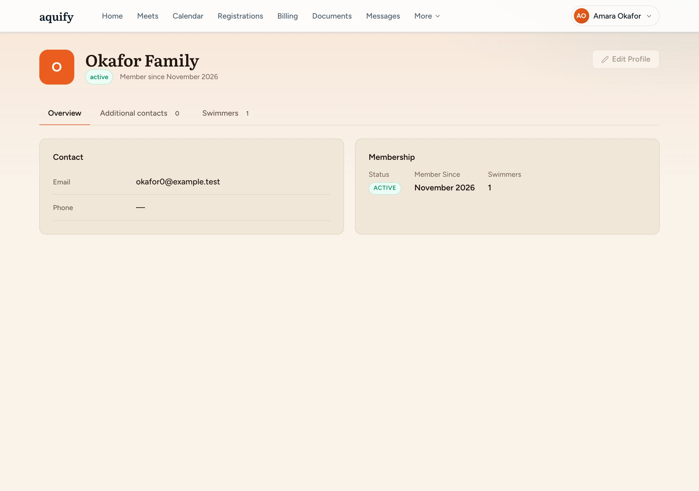
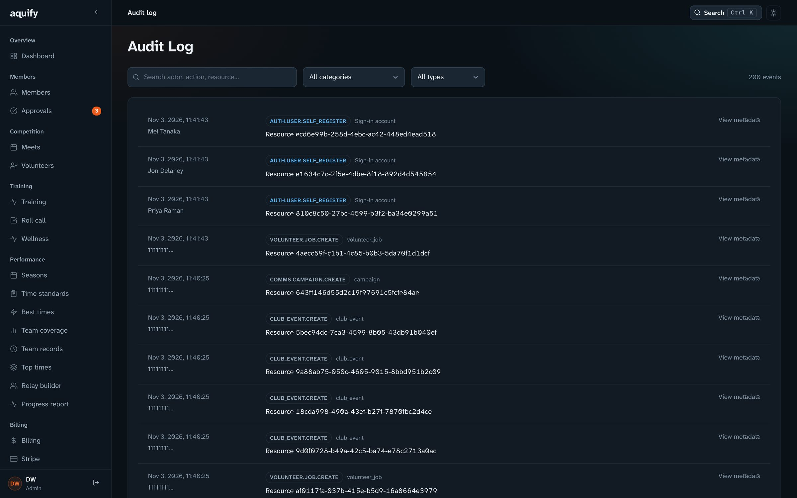

Careful with kids’ information.
Swimmers are children. aquify is built around that.
Each person sees what their job needs. Nothing more.
- AdminsRun the club. Sensitive actions, like approving a deletion, ask for a second sign-in step.
- CoachesSee their groups, practices, meets and entries. They don’t see club finances.
- ParentsSee their own household: swimmers, invoices, documents and meet requests. Never another family’s.
- SwimmersSee their own times and schedule. They can edit a short bio and nothing else.
What protects the kids.
1Parents say yes firstA swimmer under 13 can’t sign in until a parent records consent. A parent can take it back, and the account is unlinked.
2Public pages show no swimmersYour club’s public page never lists swimmer names or times.
3Every change is written downaquify records who changed what and when, and keeps it for years.
4Families can ask for their dataA parent can request a copy of their household’s information, or ask for it to be deleted. An admin reviews every deletion.



A record of every change.
When someone at the club creates, edits or approves something, the log keeps the who, what and when. You can search it and read it any time.
- Kept for about seven years.
- Filter by what happened or by type.
- Card details stay with StripeParents pay on Stripe’s page. aquify never sees or stores a card number.
- No ads, no selling dataInformation about your club and its swimmers is never sold or used for advertising.
- BackupsEncrypted backups are kept for about 30 days.
- Hosted in the United StatesYour club’s information is stored on servers in the US.
- Sign-in and rolesEveryone signs in. What they can do depends on their role, and anything not allowed is denied by default.
Questions about privacy?
Join the waitlist and ask. We’ll answer before your club decides.
Join the waitlist